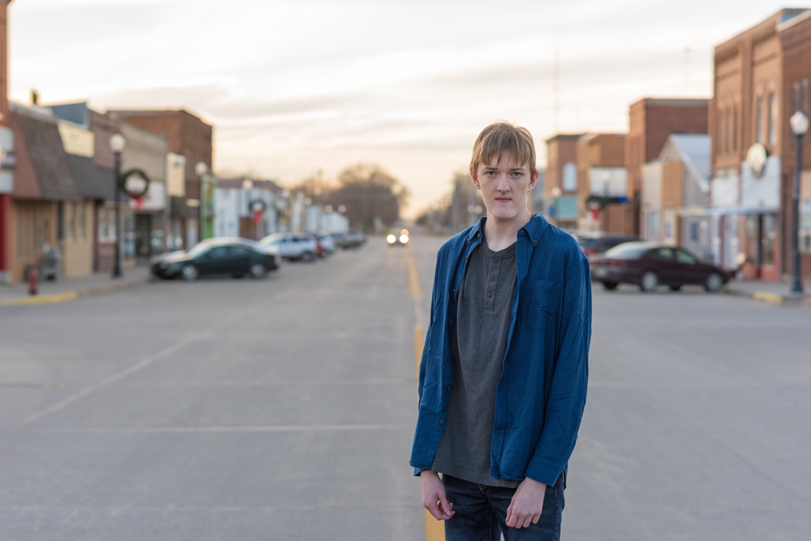
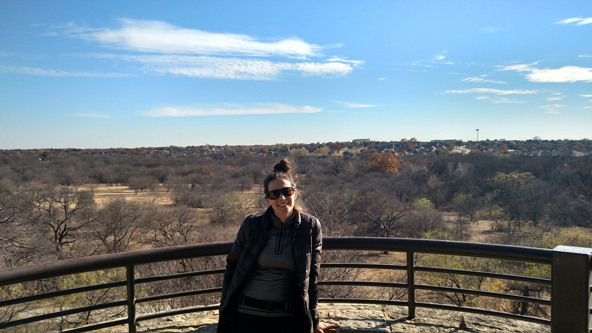
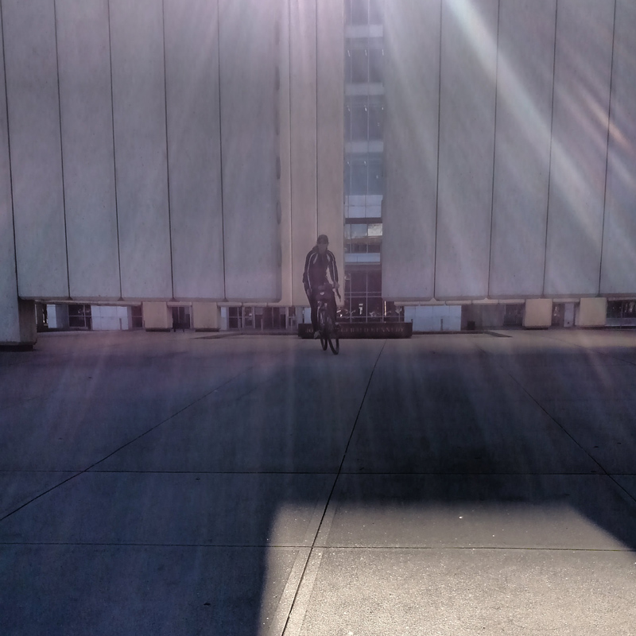
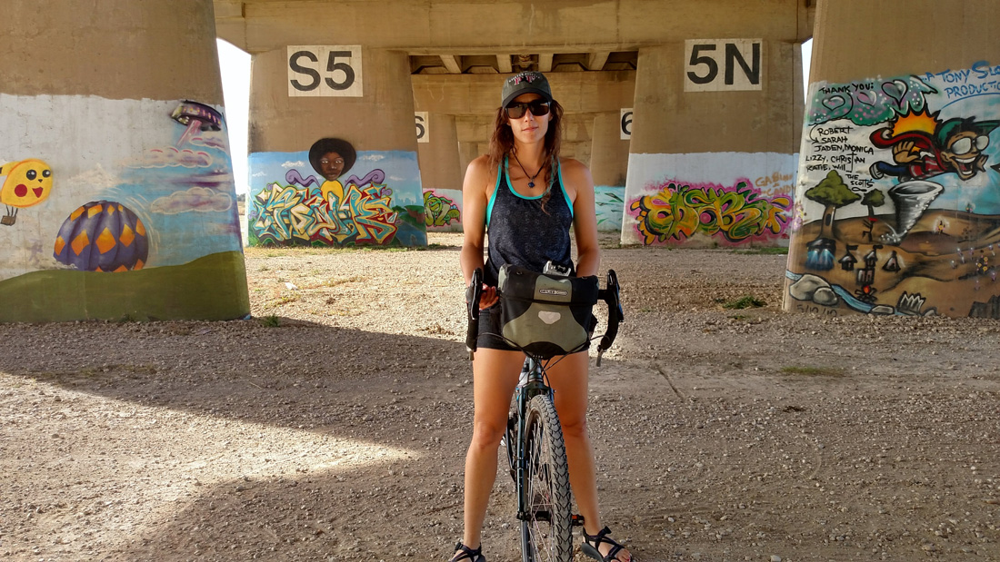
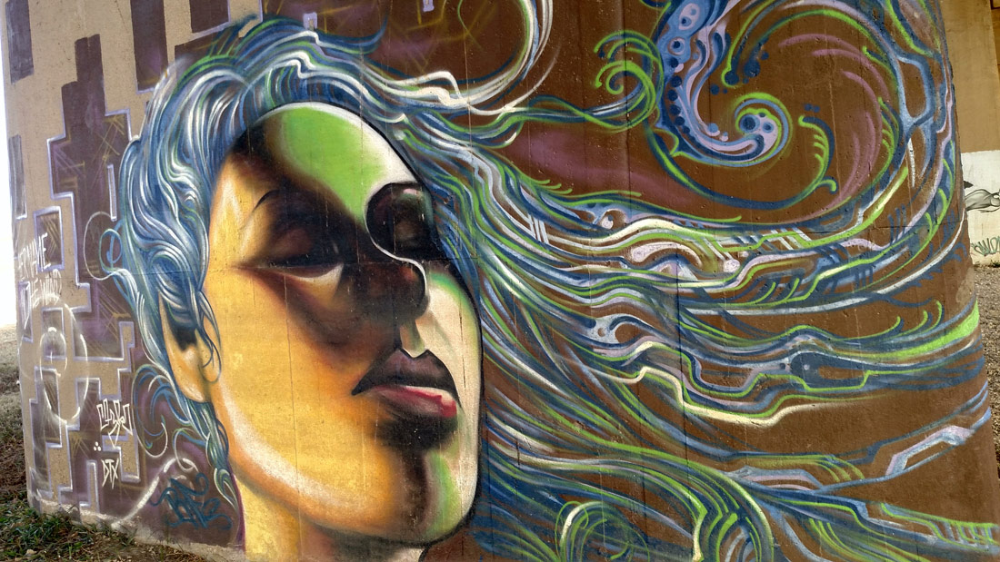
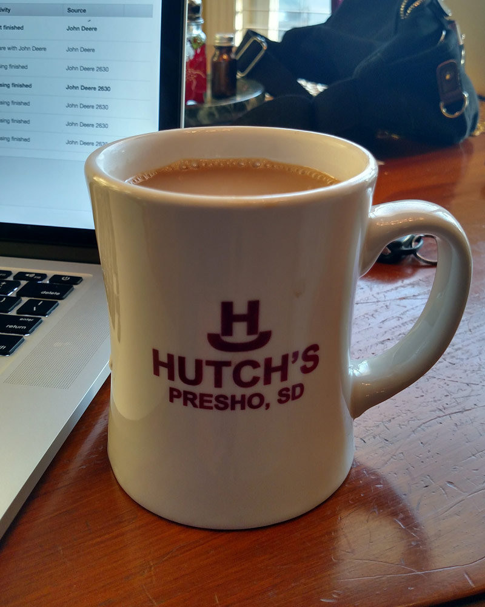
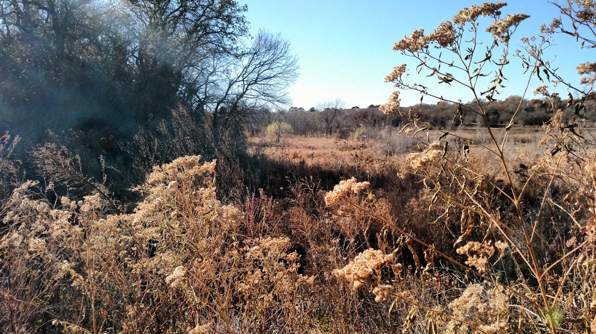
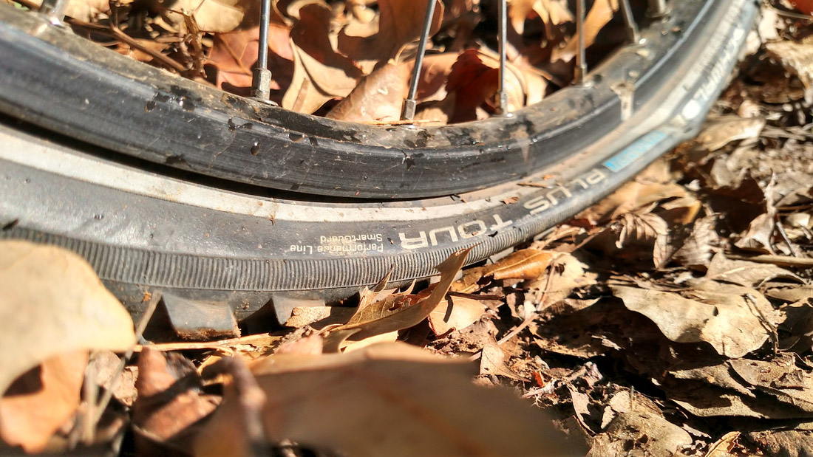

Blog Posts all posts
Escaping the Frozen North to Dallas, TX 2017-12-14
We left SD on the first of December and made our first stop in Scotland, SD. There we visited Michelle's grandma Julie, Nikki, and her four boys. It is nice to catch up and get an updated vision of everyones lives. Hunter, Nikki's oldest, is a senior this year and I got to shoot his senior photos while we were there. He is a modest, techie sort, and we listened to his younger brothers excitedly tell how he was programming a text-based adventure game for one of his high school programming classes. Luke, the next oldest, declared scientific factoids and enjoyed solving the Rubik's cube. The younger two twins, Ben and Brock, display strikingly different personalities with Ben's relaxed, and casual type-B personality contrasting sharply with Brock's more aggressive and competetive type-A. It's always interesting to see the boy developing.
A senior photo of Hunter standing in downtown Scotland, SD.
Julie has been painting more and more over the last few years and has developed a small collection in one of her spare rooms. We toured through the paintings and were impressed to see the varying landscapes from the desolate deserts, to forested mountain lakes, sandy ocean coasts, to wintery plains. She often downplays her abilities while showing an enthusiasm to paint any photos we may have taken as a source for her next painting. She's told us to select a favorite and she'd send it to us once we've finished our winter travels. Once were settled back down in Charleston, SC we're looking forward to receiving a painting of a desert landscape from the american southwest; a place we've recently taken a liking to.

Julie's southwestern painting.
After Scotland we went to Sioux Falls where one of Michelle's high school friends, Becca, was flying in from Miami to see family for a few days. We caught up with her and the girls ran off and did some shopping. Hopefully, we'll have a chance to visit her in Miami in a few months.
We also spent some time with Bob and Bonnie Cook before we left. Bob made us his walleye he had caught earlier in the year on a fishing trip to Pierre, SD and took us out on the town to a friend's wedding party. From there we went and watched some live music and tried out some craft brews at Remedy. It was a fun time and I've really developed an appreciation of Sioux Falls over the last few years. The sculpture walk has become a bigger thing pulling art from across the country, the music scene has always been warm and welcoming, breweries are shooting up everywhere, and they've done a good job of developing the bike trails and kayake launches along the Sioux River. I'll miss you Sioux Falls...
From Sioux Falls we spent one day in Omaha where we watch "Coco" in theater. Very good. Despite our plans to travel south slowly, we realized it was too cold and so bombed down to Kansas City where we met up with Garrett Kirkpatrick over lunch at a Mexican restaurant. Garrett is always good to see and he had jut passed his engieering certification after working four years in the field. Good work my man!
After the scramble south we finally made it to Dallas and went and hiked about the Arbor Hills in Plano, a northwestern suburb. What a relief to finally be able to enjoy the outdoors again. We spent a few days exploring the city on our own which I'll let the photos show.
Arbor Hills Hike
JFK memorial site in downtown Dallas.

Ronald Kirk Pedestrian Bridge with Dallas Skyline in background.
We biked the Trinity River levees and stumbeled into some grafiti along the way.
grafiti
After four days of meandering we called up my uncle Tommy who lives in FLower Mound, a northern suburb of Dallas. Tommy lives with his wife Rahel, daughter Ella, and Rahel's cousin Faven. We attended one of Ella's games where they were narrowly defeated and were impressed to see sophomore boys dunking in the following game, man...
Rahel and Faven dedicated a day to showing us the city. We got to see the George W. Bush Museum, toured through the splendid Highlands Park area including a walk through Teddy Bear park, before stopping at the extravagant shopping center where we perused designer clothes and jewelry, awed at bentleys and fancy sports cars, and then bumped into Mark Cuban at a Starbucks. I started to feel a little bit of a panic attack at one point standing in the crowds of beautiful people waiting in line for carriage rides dressed impeccably in clothes that I was unfamiliar and slightly intimidated with. I imagine what I started to feel was maybe what a homeless person feels standing in a busy, overwhelming event. They were nice and everything I just felt alienated and overwhelmed. (shivers)
Coffee at Tommy's
A walk along a nearby trail.
Flat tire riding on the bike trails of Flower Mound.

Tommy's Christmas light adorned house.
Tonight we are going to have an Ethiopean dinner with some neighbors and Michelle is going to play a few songs. The next day we are setting off for Austin, TX. I wanted to write the first blog post, even though I haven't been thinking about it and taking photos, to break the rust and hopefully to get in the habit of thinking about it as we travel.